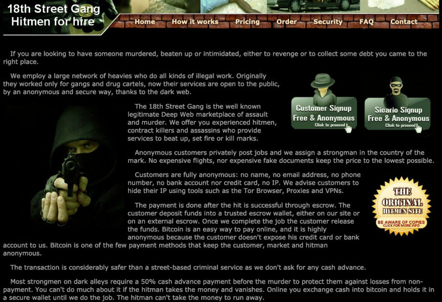
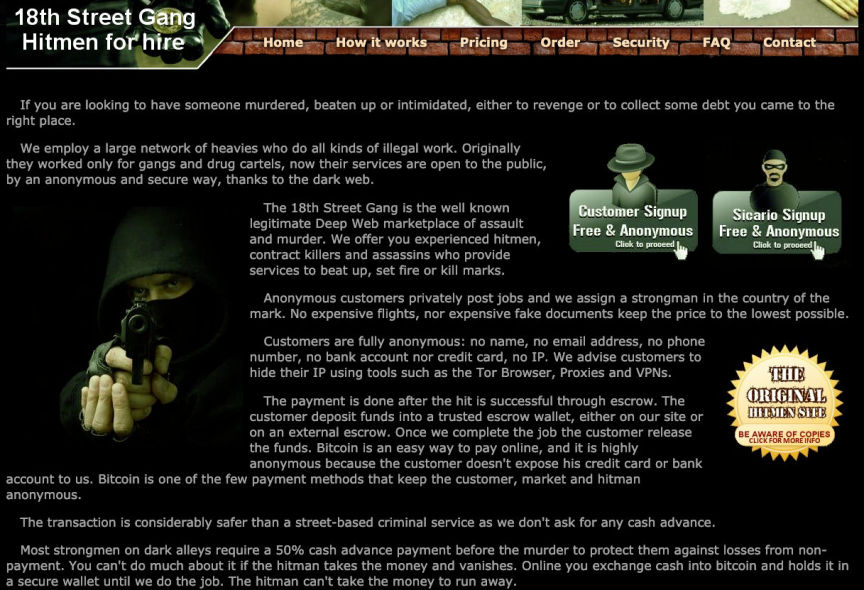

German Man Imprisoned for Attempting to Hire a Hitman
The Berlin district court jailed a man for hiring a hitman on the dark web to murder the partner of a man he loved.

According to the Berlin public prosecutor's office, the 28-year-old defendant fell in love with a 38-year-old man he had met online in 2020. The 38-year-old was in a long-term relationship and moved in with his partner in late 2021.
After all his attempts to win over the 38-year-old failed, the defendant decided to get rid of the 38-year-old's partner. The defendant joined a darknet murder-for-hire site in February 2022 and started looking for a hitman.
On March 7, 2022, the defendant placed the first order and deposited $9,000 in bitcoin into the site's escrow as payment. He also gave the name, address, and photos of the 38-year-old's partner. He then asked the hitman to make the hit look like an accident or the result of a robbery gone wrong.
The defendant kept increasing the pay whenever the hit failed to take place. By the end of March, he had paid a total of approximately $24,000.
The defendant filed multiple complaints with the site's admin over the unfulfilled orders. On April 4, 2022, the site's admin finally told the defendant that the site was a scam. The revelation did not dissuade the defendant from looking for a hitman on the dark web as he continued to search for one.
His activities had attracted the attention of an investigative journalist researching dark web murder-for-hire sites. The journalist collected information on the murder-for-hire plot orchestrated by the 28-year-old and shared it with the Berlin State Criminal Police Office (LKA).
The defendant was arrested on April 9 and placed in pre-trial detention. The Berlin public prosecutor's office filed an indictment against the 28-year-old on September 1.
The defendant was sentenced to Four and a half years in prison on December 8, 2022 after he pleaded guilty to attempted incitement to commit murder.

According to the Berlin public prosecutor's office, the 28-year-old defendant fell in love with a 38-year-old man he had met online in 2020. The 38-year-old was in a long-term relationship and moved in with his partner in late 2021.
After all his attempts to win over the 38-year-old failed, the defendant decided to get rid of the 38-year-old's partner. The defendant joined a darknet murder-for-hire site in February 2022 and started looking for a hitman.
On March 7, 2022, the defendant placed the first order and deposited $9,000 in bitcoin into the site's escrow as payment. He also gave the name, address, and photos of the 38-year-old's partner. He then asked the hitman to make the hit look like an accident or the result of a robbery gone wrong.
The defendant kept increasing the pay whenever the hit failed to take place. By the end of March, he had paid a total of approximately $24,000.
The defendant filed multiple complaints with the site's admin over the unfulfilled orders. On April 4, 2022, the site's admin finally told the defendant that the site was a scam. The revelation did not dissuade the defendant from looking for a hitman on the dark web as he continued to search for one.
His activities had attracted the attention of an investigative journalist researching dark web murder-for-hire sites. The journalist collected information on the murder-for-hire plot orchestrated by the 28-year-old and shared it with the Berlin State Criminal Police Office (LKA).
The defendant was arrested on April 9 and placed in pre-trial detention. The Berlin public prosecutor's office filed an indictment against the 28-year-old on September 1.
The defendant was sentenced to Four and a half years in prison on December 8, 2022 after he pleaded guilty to attempted incitement to commit murder.